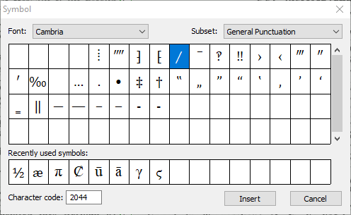

Verification
Use AFR's built-in program to verify recognition accuracy on each page.
Please consult with Prof. Logan to discuss what to verify and when. We do not verify all pages.
Verifying a page asks you to check the accuracy of all "low-confidence" characters and words that are not in the dictionary. It is helpful for correcting small details, like a comma that should be a period. It will not catch all errors; sometimes the OCR engine is confident in wrong results. After completing the verification process, visually scan the page looking for obvious errors.
-
Click the Verify icon. .
The Verification window opens.
Figure 1. Verification window.
- Compare the highlighted word in the lower window to the source text in the top window. To verify a highlighted word, click Skip. The dialogue moves to the next questionable letter or word.
- Correct errors in the lower window. The Skip button changes to Confirm, and you click it to accept the change and move to the next letter or word.
- The Suggestions window contains possible corrections. Use the Replace button to automatically correct the error.
- The drop-down menu below the Suggestions window indicates the dictionary ABBYY FineReader is using. If you are getting a lot of spelling questions, the program may be assigning the wrong language to the text. This usually requires a change to the user file to correct. Alert your supervisor to the problem immediately.
The following guidelines can help in addressing common situations when verifying text. Further information is contained in Editorial standards.
- Old-fashioned spellings in words should be preserved and can be included in the dictionary with the Add to Dictionary button.
-
Any line-break hyphens, as in the example, should be removed. Soft, or
"optional," hyphens are indicated with " ¬ " and can be safely ignored.
-
Common fractions can be found on the symbol chart, in the Latin-1
Supplement and the Number Forms
subsections (see Unicode Characters). Create a reasonable substitute for other
fractions by using a combination of superscript numerals for the nominator, a
Fraction Slash ⁄ (
U+2044), and subscript numerals for the denominator.To quickly insert a Fraction Slash, open the Symbols window and type 2044 in the Character code box.
 -
Unusual characters can be found in the Symbols window.
Where the print page includes an unavailable or hand-drawn symbol inline, use █
U+2588Full Block as a placeholder.